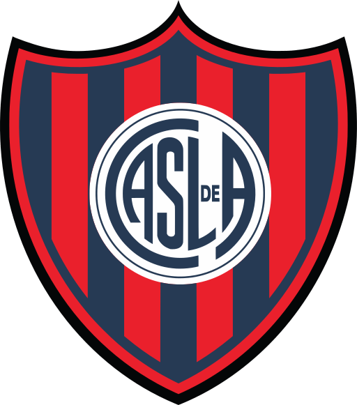
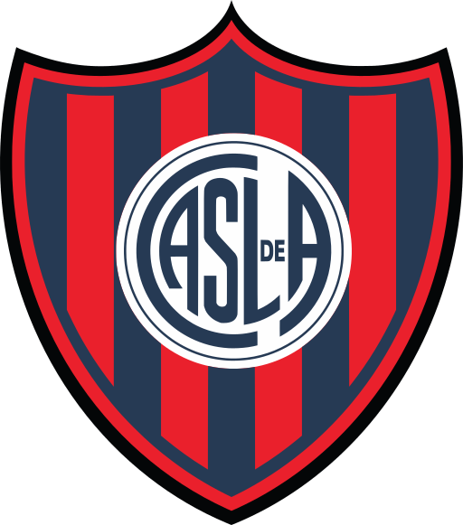

¿qué es?
San lorenzo es un club fundado en 1908 que actualmente disputa la primera división del futbol argentino, es conocido por ser uno de los clubes más grandes en la argentina. Cuenta en sus vitrinas:
- Una copa CONMEBOL Libertadores 2014
- 15 campeonatos de primera división
- Una copa CONMEBOL Sudamericana 2002
- Una copa CONMEBOL Mercosur (actualmente conocida como Sudamericana)
 
